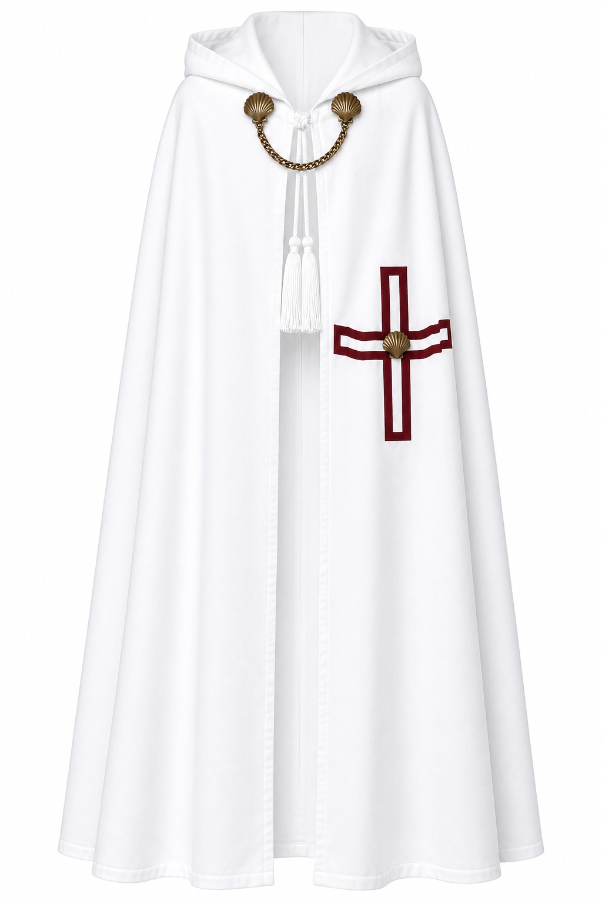

Manto

Manto
Manto branco com capuz, fechado por corrente e fechos dourados em forma de concha, com cruz vermelha bordada e concha central.
Luvas
Luvas (gauntlet)
Luvas brancas de couro com punho alto e cruz vermelha aplicada no punho.

Luvas (gauntlet)
Par de luvas brancas com cruz vermelha em cada punho.